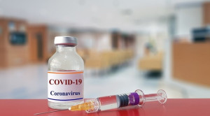

Mitos dan Fakta Seputar Berjemur Saat Pandemi COVID-19
Beredar kabar bahwa berjemur di bawar sinar matahari dapat membunuh virus Corona dan mencegah penularan COVID-19. Benarkah sinar matahari...
Pentingnya Menerapkan Social Distancing Demi Mencegah COVID-19
Dalam upaya menangani wabah virus Corona yang semakin meluas, pemerintah menganjurkan masyarakat untuk menerapkan social distancing atau pembatasan sosial. Mari kenali apa itu...
terbaru

Ketahui Sederet Obat-Obatan Corona di Sini
Setiap hari, pasien positif virus Corona kian bertambah. Namun, antivirus atau vaksin untuk mengatasi virus ini belum juga berhasil ditemukan. Para peneliti pun...